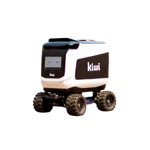
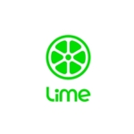

|
I am a Senior Machine Learning Scientist at Dynamo AI focusing on LLM Research & GTM. I have a BA in Applied Mathematics with a concentration in machine learning from the University of California, Berkeley. I am originally from John's Creek, Georgia and love playing football, basketball, volleyball, chess, and poker! My interests lie in large language models, generative AI, computer vision & deep learning research, sports analytics, and data science. I have over 5 years of industry experience in machine learning and AI. I started at Kettle Reinsurance as a Data Scientist from 2020 to 2022, where I developed climate and wildfire risk models. Then I joined Gretel Labs as an Applied Scientist working on generative networks from 2022 to 2023. Since August 2023, I've been at Dynamo AI, where I currently work on developing guardrail language models and multi-GPU data pipelines. During my time at UC Berkeley, I started my own company, Diascan, where we created medical imaging software for lung cancer diagnosis. I also worked at Kiwi Robotics, GoFind, and Main Management. |
{kind=link}
|
Programming & Tools: Python, Java, R, SQL, AWS (Athena, S3, Glue, Redshift, Sagemaker), GCP, PyTorch, TensorFlow, Transformers Machine Learning: Large Language Models (LLMs), Diffusion Models, Stable Diffusion, Computer Vision, Deep Learning, Image Generation Mathematics: Statistical Modeling, Linear Algebra, Calculus, Optimization, Numerical Analysis |
|
My career has focused on applying machine learning and AI to solve challenging problems in various domains. |
 |
Senior Machine Learning Scientist - LLM Research & GTM New York, New York August 2023 to Present At Dynamo AI, I work on cutting-edge LLM research and development. I've developed guardrail language models that outperform GPT-4o and created multi-GPU data pipelines mining 100M high-quality tokens. I'm also the author of "GuardFormer" submitted to NeurIPS 2024 and have trained multilingual LLMs ranging from 1.5B to 8B parameters. Utilizing Python, PyTorch, Transformers, AWS, GCP, and distributed computing techniques. |
 |
Applied Scientist - Generative Networks Remote May 2022 to August 2023 At Gretel Labs, I focused on generative AI research and development. I fine-tuned large foundation models up to 70B parameters and developed data acquisition pipelines. I also integrated diffusion models into the company's image generation API, enhancing our product offerings. Utilized Python, PyTorch, Stable Diffusion, Transformers, AWS, and various ML frameworks. |
 |
Data Scientist San Francisco, California February 2020 to May 2022 At Kettle, I worked on climate and wildfire risk modeling. I generated synthetic climate datasets and built AWS data transformation workflows. I also developed predictive models for wildfire risk assessment, which were crucial for the company's reinsurance offerings. Utilized Python, AWS (Athena, S3, Glue, Redshift, Sagemaker), SQL, and statistical modeling techniques. |
|  |
Autonomous Driving Research Intern Berkeley, California May 2018 to August 2018 I collaborated with a development team of four to collect, filter, transform, and analyze over twenty hours of streamed video data from Kiwi Robots in order to help the robots navigate crosswalks autonomously. My project was to predict steering wheel and throttle of the delivery robots by implementing the Stanford paper, Self-Driving Car Steering Angle Prediction Based on Image Recognition, on the data my team collected. Following the paper, I built two different models in PyTorch. The first model comprised of 3D convolutional layers followed by LSTM recurrent layers. The second model used transfer learning with 2D convolutional layers on a pre-trained model where I only retrained the fully connected layers. Utilized Python, Pytorch, Convolutional Neural Networks, LSTM, Sci-Kit Learn, Pandas, OpenCV. |
|  |
Data Science Consultant San Francisco, California May 2018 to June 2018 I worked with the Head of Product @ Lime, Colin McMahon, on a one month long project. The project was to help Lime precisly identify places in San Francisco where tourist activity was high. I used the Flickr API in order to pull around fifty thousand different location points (latitude and longitude) of images specifically taken from tourists in San Francisco. I then clustered the location points on a virtual map to help Lime choose which areas to expand too and increase bike capacity. You can check out the clustering here! Utilized Python, Pandas, OpenCV, Sci-Kit Learn. |
|
Co-Founder and Chief Technology Officer Atlanta, Georgia June 2015 to July 2019 I started Diascan in the summer of 2015. Diascan was a software that used deep learning and computer vision to help radiologists more accurately
detect and diagnose lung cancer from medical imagery. As the technology lead, I built the machine learning pipeline. The pipeline had two parts. The first
part was a SSD object detection model that would return bounding boxes of tumors found in CT scans. The second part of the pipeline was a
classification model that would classify whether or not the tumor found in the first part of the pipeline was benign or malignant.
Utilized Python, Pytorch, Convolutional Neural Networks, LSTM, Sci-Kit Learn, Pandas, OpenCV.
|
{kind=link}
|
My research interests include language models, generative AI, and applied machine learning. |
|
GuardFormer: Enhancing LLM Safety Through Guardrail Models
NeurIPS 2024 (Submitted) Paper Research paper developing novel guardrail language models that can effectively filter and guide LLM outputs for improved safety. The proposed models outperform GPT-4o on safety benchmark evaluations while maintaining output quality. Key innovations include specialized training techniques and multi-GPU data pipelines for high-quality token mining. |
|
A Comparative Analysis of Machine Learning Models for Breast Cancer Classification
CS 198 - Machine Learning and Data Science (Final Project) Paper / Code Using data from the Breast Cancer (Diagnostic) Data set, we built machine learning models to classify breast mass instances as benign or malignant. We used five machine learning models - SVM, Random Forest, Logistic Regression, Decision Trees, and a Neural Network. For each model, we incorporated hyper-parameter tuning and cross validation. |
|
Q Learning for Optimal Trade Execution
IEOR 222 - Financial Engineering II (Final Project) Paper / Code Optimal Order Execution has been a long standing problem in financial institutions. There are many ways to tackle this issue; however, the backbone of all the solutions was a strategy laid out by Dimitris Berstsimas and Andrew Lo in the paper Optimal control of execution costs. The goal of the final project was to use reinforcement learning, specifically Q Learning, in order to learn the optimal order execution strategy under various price impact models that was laid out in Bertimas and Lo's paper. |
|
Cal Baseball: Clubhouse Analytics
IEOR 185 - Startup Challenge Video / Presentation Worked with the Cal Baseball team to develop an easy to use interface for coaches and players to view and analyze various different sabermetrics (baseball statistics). I was in charge of data engineering and analysis. I also developed statiscal applications that the team could use such as lineup optimization and in-depth analytical scouting reports. |
|
Personal Investing: Stock Pitches
NetEase Long Thesis / Nvidia Short Thesis I have been very interested in investement research. I have written couple of investment pitches for positions in my portfolio. Specifcally, I wrote a long thesis on NetEase and a short thesis on Nvidia. On another note, since January 2020, my portfolio has beaten the S&P 500 benchmark index by 11%. Portfolio has returned 26.64%, whereas S&P 500 has returned only 15.16%. |
|
Instacart APM Challenge
Report / Feature Presentation Material I wrote and designed for the Instacart APM challenge. |
|
Last Updated: April 2025 | Design and source code from Jon Barron's website. |